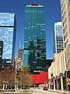

From today's featured article

Saturn is the sixth planet from the Sun and the second-largest in the Solar System, after Jupiter. Named after the Roman god of agriculture, it is a gas giant with an average radius about nine times that of Earth. Although it has only one-eighth the average density of Earth, it is over 95 times more massive. A core, probably iron–nickel and rock, is surrounded by a deep layer of metallic hydrogen, an intermediate layer of liquid hydrogen and liquid helium, and a gaseous outer layer. Ammonia crystals give the upper atmosphere a pale yellow hue. Electrical current within the metallic hydrogen layer is thought to give rise to the planetary magnetic field. Wind speeds can reach 1,800 km/h (500 m/s), higher than on Jupiter, but not as high as on Neptune. A prominent ring system with nine continuous main rings and three smaller arcs is composed mostly of ice particles, with some rocky debris and dust. Saturn has hundreds of moonlets and at least 62 moons, including Titan, the second-largest moon in the Solar System and the only one with a substantial atmosphere.
Part of the Solar System series, one of Wikipedia's featured topics
Archive. By Email. More featured articles.
Did you know...
- ... that residents of the top 15 floors of the Optima Signature (pictured) have access to a private club in the building?
- ... that the Roman consul, urban prefect, and jurisconsult Plotius Pegasus was named by his father, a naval commander, after a ship he commanded?
- ... that the New Britain bronzewing is rated as a "vulnerable species" because the population is in decline and there are fewer than 5,000 birds in total?
- .. that Christof Loy received the Der Faust award for staging Mozart's Così fan tutte at the Frankfurt Opera?
- ... that Michele Strazzabosco played in a preseason game with the Buffalo Sabres prior to the 2006–07 NHL season, becoming the first Italian-trained player to do so in National Hockey League history?
- ... that the so-called "Tibesti Soda Lake" at the bottom of the Trou au Natron volcanic caldera is actually a mineral crust composed of sodium carbonate?
- ... that Fannie Eleanor Williams created blood storage techniques used in the first Australian blood bank?
- ... that German People's Radio pretended to broadcast from within Germany, but was actually located in Moscow?
Recent Additions. Start a new article. Nominate an article
In the News

- Wildfires in Northern California kill at least 23 people and injure hundreds of others.
- Richard Thaler (pictured) is awarded the Nobel Memorial Prize in Economic Sciences.
- Flooding and landslides from Hurricane Nate kill at least 38 people in Central America.
- Kazuo Ishiguro is awarded the Nobel Prize in Literature.
- Jeffrey C. Hall, Michael Rosbash, and Michael W. Young share the Nobel Prize in Physiology or Medicine for their discoveries of molecular mechanisms controlling the circadian rhythm.
Other recent events
Recent deaths: Rafe Mair. Y. A. Tittle
On this day...
October 12: Shemini Atzeret (Judaism, 2017); Feast day of Our Lady of the Pillar in the Philippines and Spain; National Day in Spain (1492)

- 1398 – The Grand Duke of Lithuania Vytautas the Great and the Grand Master of the Teutonic Knights Konrad von Jungingen signed the Treaty of Salynas, the third attempt to cede Samogitia to the Knights.
- 1798 – The Peasants' War began in Overmere, Southern Netherlands, with peasants taking up arms against the French occupiers.
- 1917 – First World War: New Zealand troops suffered more than 2,000 casualties, including more than 800 deaths, in the First Battle of Passchendaele, making it the nation's largest loss of life in one day.
- 1960 – Soviet leader Nikita Khrushchev (pictured) reportedly pounded his shoe on a desk during the Plenary Meeting of the United Nations General Assembly in response to Filipino delegate Lorenzo Sumulong's assertion of Soviet colonial policy being conducted in Eastern Europe.
- 1992 – A 5.8 MB earthquake struck south of Cairo, Egypt, killing 545 people.
Demosthenes (d. 322 BC) · Ramsay MacDonald (b. 1866) · Ricky Wilson (d. 1985)
More anniversaries: October 11 October 12 October 13
Archive. By email. List of historical anniversaries.